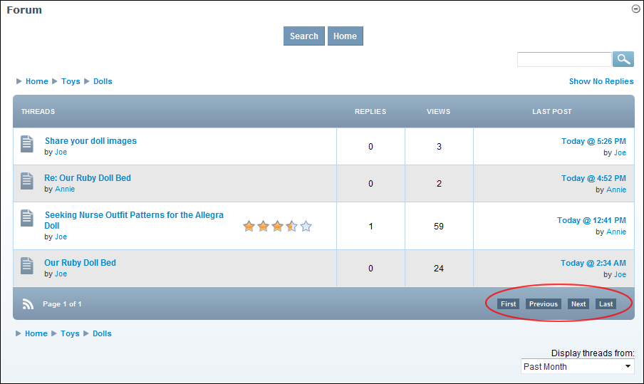

Navigating Threads
How to navigate to threads which are not displayed in the Forum module
- Navigate to the required Forum. See "Navigating to Forums & Forum Groups"
- Use the First, Previous, Next and Last links to navigate to threads not currently displayed.

Navigating Threads